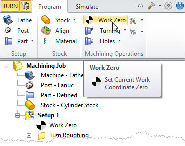
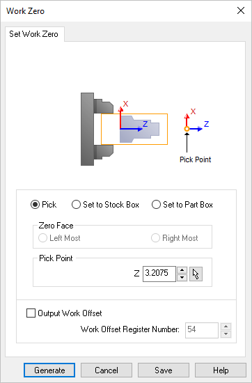
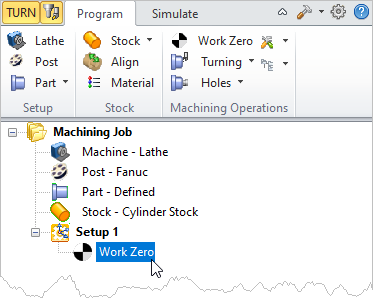

Work Zero defines the work coordinate (part or stock) origin. This is also known as the program zero. Work Zero translates the turn machine coordinate system origin (CSYS) to the desired location on the Z axis. Typically this is set to the face of the part or stock geometry. This dialog can be invoked by selecting Work Zero from Program tab under the Machining Browser.
Work Zero defines the work coordinate (part or stock) origin. This is also known as the program zero. Work Zero translates the turn machine coordinate system origin (CSYS) to the desired location on the Z axis. Typically this is set to the face of the part or stock geometry. This dialog can be invoked by selecting Work Zero from Program tab under the Machining Browser.
 Work Zero Menu Item |
Set Work Zero dialog appears as shown below. You can set the origin by explicitly picking a point on the Z axis or can set it with respect to the Part or Stock geometry bounding boxes.  Dialog Box: Work Zero |
If you select the Pick option, the button with the pick cursor will be activated. You can then click on this button to graphically select a point to set Work Zero.
|
Selecting this item will activate the Zero Face section of the dialog. You can then select the zero face to the Left Most or to the Right Most face of the stock by choosing the appropriate selections in the dialog. |
Similar to the previous selection, selecting this item will activate the Zero Face section of the dialog. You can then select the zero face to the Left Most or to the Right Most face of the part by choosing the appropriate selections in the dialog. |
This allows you to specify a Work Coordinate Offset number which is then output in the posted code. This is set under Work Offset Register Number. Work offsets are used to set work piece origin(s) on CNC machines that are assigned to a register number G54, G55 etc... Entering a positive number will make incremental offsets positive (i.e., G54, G55, etc.) Entering a negative number will make decremental offsets (i.e., G54, G53, etc.).
For example: •To output G54, G55, etc., set the Work Offset Register number to 54. To output G54, G53, etc., set the Work Offset Register number to -54 (negative). •The Work Offset Prefix “G” is set in the post-processor generator. |
Click Generate and Work Zero is now listed under Setup in Machining Browser. The Machine CSYS origin is now translated to the specified location.  Work Zero displayed in the Machining Browser |
In the example shown below Work Zero is set to: •Set to Stock Box •Zero Face – Right Most
|